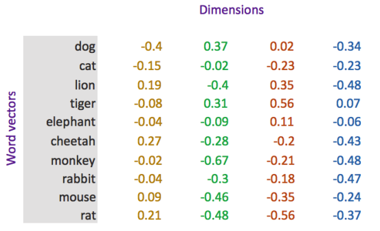

循环神经网络和自然语言处理介绍
目标
- 知道
token和tokenization - 知道
N-gram的概念和作用 - 知道文本向量化表示的方法
1. 文本的tokenization
1.1 概念和工具的介绍
tokenization就是通常所说的分词，分出的每一个词语我们把它称为token。
常见的分词工具很多，比如：
jieba分词：https://github.com/fxsjy/jieba- 清华大学的分词工具THULAC：
https://github.com/thunlp/THULAC-Python
1.2 中英文分词的方法
- 把句子转化为词语
- 比如：
我爱深度学习可以分为[我，爱， 深度学习]
- 比如：
- 把句子转化为单个字
- 比如：
我爱深度学习的token是[我，爱，深，度，学，习]
- 比如：
2. N-garm表示方法
前面我们说，句子可以用但个字，词来表示，但是有的时候，我们可以用2个、3个或者多个词来表示。
N-gram一组一组的词语，其中的N表示能够被一起使用的词的数量
例如：
In [59]: text = "深度学习（英语：deep learning）是机器学习的分支，是一种以人工神经网络为架构，对数据进行表征学习的算法。"
In [60]: cuted = jieba.lcut(text)
In [61]: [cuted[i:i+2] for i in range(len(cuted)-1)] #N-gram 中n=2时
Out[61]:[['深度', '学习'],
['学习', '（'],
['（', '英语'],
['英语', '：'],
['：', 'deep'],
['deep', ' '],
[' ', 'learning'],
['learning', '）'],
['）', '是'],
['是', '机器'],
['机器', '学习'],
['学习', '的'],
['的', '分支'],
['分支', '，'],
['，', '是'],
['是', '一种'],
['一种', '以'],
['以', '人工神经网络'],
['人工神经网络', '为'],
['为', '架构'],
['架构', '，'],
['，', '对'],
['对', '数据'],
['数据', '进行'],
['进行', '表征'],
['表征', '学习'],
['学习', '的'],
['的', '算法'],
['算法', '。']]
在传统的机器学习中，使用N-gram方法往往能够取得非常好的效果，但是在深度学习比如RNN中会自带N-gram的效果。
3. 向量化
因为文本不能够直接被模型计算，所以需要将其转化为向量
把文本转化为向量有两种方法：
- 转化为one-hot编码
- 转化为word embedding
3.1 one-hot 编码
在one-hot编码中，每一个token使用一个长度为N的向量表示，N表示词典的数量
即：把待处理的文档进行分词或者是N-gram处理，然后进行去重得到词典，假设我们有一个文档：深度学习，那么进行one-hot处理后的结果如下：
| token | one-hot encoding |
|---|---|
| 深 | 1000 |
| 度 | 0100 |
| 学 | 0010 |
| 习 | 0001 |
3.2 word embedding
word embedding是深度学习中表示文本常用的一种方法。和one-hot编码不同，word embedding使用了浮点型的稠密矩阵来表示token。根据词典的大小，我们的向量通常使用不同的维度，例如100,256,300等。其中向量中的每一个值是一个参数，其初始值是随机生成的，之后会在训练的过程中进行学习而获得。
如果我们文本中有20000个词语，如果使用one-hot编码，那么我们会有2000020000的矩阵，其中大多数的位置都为0，但是如果我们使用word embedding来表示的话，只需要20000\ 维度，比如20000*300
形象的表示就是：
| token | num | vector |
|---|---|---|
| 词1 | 0 | [w11,w12,w13...w1N] ,其中N表示维度（dimension） |
| 词2 | 1 | [w21,w22,w23...w2N] |
| 词3 | 2 | [w31,w23,w33...w3N] |
| ... | …. | ... |
| 词m | m | [wm1,wm2,wm3...wmN],其中m表示词典的大小 |
我们会把所有的文本转化为向量，把句子用向量来表示
但是在这中间，我们会先把token使用数字来表示，再把数字使用向量来表示。
即：token---> num ---->vector

3.3 word embedding API
torch.nn.Embedding(num_embeddings,embedding_dim)
参数介绍：
num_embeddings：词典的大小embedding_dim：embedding的维度
使用方法：
embedding = nn.Embedding(vocab_size,300) #实例化
input_embeded = embedding(input) #进行embedding的操作
3.4 数据的形状变化
思考：每个batch中的每个句子有10个词语，经过形状为[20，4]的Word emebedding之后，原来的句子会变成什么形状？
每个词语用长度为4的向量表示，所以，最终句子会变为[batch_size,10,4]的形状。
增加了一个维度，这个维度是embedding的dim